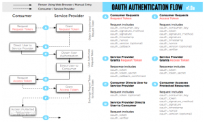

PS：将原来的一篇文章拆开了，上篇是安装使用讲解，这篇是开发过程讲解。
以前使用dropbox的linux客户端备份VPS上的文件和数据，但是近来dorpbox在国内越来越难访问，加上dropbox本身的容量只有几G，于是有了自己动刀写一个网盘的客户端，首先想到的是百度网盘，2T的巨大容量肯定是够用了！
没想到这个决定却是悲剧的开始，按照百度PCS的API文档写了半天，没想到PCS开通居然审核了一周多还不通过！ 联系客服，没想到他们的PCS API已经不审核新的申请了！再次吐槽下，你不审核，申请的时候就不能给个提示么！！！ 遂放弃！
然后就想到了还是用金山快盘吧，前段时间刚被迅雷收购，速度方面应该是没有问题。找到金山快盘的官方开放平台，看了看文档似乎是…有点麻烦啊。不过本着有难度才有挑战的原则，还是开搞了。下面介绍下开发过程中遇到的一些问题。
首先就是快盘的授权机制，本来是不太复杂，但是它的授权流程签名并不支持PLAINTEXT明文文本格式，只支持了一个HMAC-SHA1加密方式。为了处理这个签名倒是走了一些弯路。
拿到授权token的过程可以总结为三歩走：
- 获取未授权的临时 token；
- 用户登陆并授权你的应用；
- 根据临时 token换取真实的 access_token。
图示如下：
{kind=link}

在每次请求中，下面几个参数是必须的
| Name | Required | Type and Limit | Description |
| oauth_consumer_key | Y | string | 第1步的 consumer_key |
| oauth_signature | Y | string | 本次请求的签名,生成方法请参考附录-签名生成算法 |
| oauth_timestamp | Y | int | 时间戳，正整数，和标准时间不超过5分钟 |
| oauth_nonce | Y | string | [ 0-9A-Za-z_ ]随机字符串,长度小于32字节。每次请求请使用不同的nonce |
oauth_consumer_key可以在你创建应用的时候拿到，oauth_timestamp为标准的unix时间戳格式，oauth_nonce每次都生成一个随机数，这几个参数都非常好处理，主要就是oauth_signature这个费些周章。
官方的OAuth签名生成讲的比较具体，其实获取签名的方式也非常简单：
- 计算串基
- 根据串基按HMAC-SHA1获取签名并使用bash64和url_encode 转码
生成签名的时候，如果是申请request_token 那么HMAC_SHA1加密的key 就是你的consumer_secret+&，其他都是consumer_secret+&+oauth_token_secret！
Linux shell中处理url_encode 没有太好的办法，我索性就写了一个函数用sed处理了，代码如下：
#url encode
function url_encode
{
url=$1
echo -n $(echo -n "$url" | sed 's/\%/\%25/g'|sed 's/&/\%26/g' |sed 's/:/\%3A/g' |sed 's/\//\%2F/g'| sed 's/=/\%3D/g' |sed 's/ /\%20/g' |sed 's/@/\%40/g' |sed 's/+/\%2B/g' |sed 's/*/\%2A/g')
}
拼接字符串基可归结为：请求方式&url_encode(请求URL)&(url_encode(参数1+参数2… ))
使用bash获取签名处理方法如下：
function get_signature
{
method=$1
url=$2
data=$3
token_secret=$4
baseUrl="$1&$(url_encode "$2")&$(url_encode "$3")"
signature=$(echo -n $baseUrl | openssl dgst -sha1 -binary -hmac "$APP_CONSUMER_SECRET&$token_secret" |base64)
echo -n $(url_encode $signature)
}
有了签名，一切都简单了。按照官方开发文档上参数列表把其他必选的参数拼好就行了。
请求使用的curl，命令格式如下：
Curl –s –S –L –d “参数” “请求的URL” –o “本地缓存文件”
整个脚本的源码如下：
#!/usr/bin/env bash
#
# KuaiPan Uploader
#
#===========================================================================
# Copyright (C) 2014-2015 wangheng <wujiwh@gmail.com>
#
# This file is part of Kuaipan Uploader source code.
#
# Kuaipan Uploader is free software; you can redistribute it
# and/or modify it under the terms of the GNU General Public License as
# published by the Free Software Foundation; either version 2 of the License,
# or (at your option) any later version.
#
# Kuaipan Uploader is distributed in the hope that it will be
# useful, but WITHOUT ANY WARRANTY; without even the implied warranty of
# MERCHANTABILITY or FITNESS FOR A PARTICULAR PURPOSE. See the
# GNU General Public License for more details.
#
# You should have received a copy of the GNU General Public License
# along with Foobar; if not, write to the Free Software
# Foundation, Inc., 51 Franklin St, Fifth Floor, Boston, MA 02110-1301 USA
#===========================================================================
#===========================================================================
# FileName: kuaipan_uploader.sh
# Desc: API Doc is: http://www.kuaipan.cn/developers/document.htm
# Author: wangheng
# Email: wujiwh@gmail.com
# HomePage: http://wangheng.org
# Version: 1.0.1
# LastChange: 2015-05-09 09:34:59
# History:
#===========================================================================
#配置文件.
CONFIG_FILE=~/.kuaipan_upload.conf
RESPONSE_FILE="/tmp/resp_kuaipan"
COOKIE_FILE="/tmp/kuaipan.cookie"
Version="1.0.1"
#使用整个快盘此处填"kuaipan"，使用应用目录填"app_folder"
ROOT_DIR="app_folder"
#这里改为你自己应用的consumer_key和consumer_secret_key
APP_CONSUMER_KEY="xc0kwh2EAKlTQqCd"
APP_CONSUMER_SECRET="6mnnfufVvWzPzOgb"
#授权相关
API_REQUEST_TOKEN_URL="https://openapi.kuaipan.cn/open/requestToken"
API_USER_AUTH_URL="https://www.kuaipan.cn/api.php?ac=open&op=authorise&oauth_token="
API_AUTH_TOKEN_URL="https://openapi.kuaipan.cn/open/accessToken"
#统计信息相关
API_ACCOUNT_INFO_URL="http://openapi.kuaipan.cn/1/account_info"
API_METADATA_URL="http://openapi.kuaipan.cn/1/metadata"
#上传、下载、删除
API_UPLOAD_REQUEST_URL="http://api-content.dfs.kuaipan.cn/1/fileops/upload_locate"
API_DOWNLOAD_URL="http://api-content.dfs.kuaipan.cn/1/fileops/download_file"
API_DELETE_FILE_URL="http://openapi.kuaipan.cn/1/fileops/delete"
Dependents="curl sed awk basename date grep tr od openssl base64"
CURL="curl"
#检查程序的依赖项
for i in $Dependents; do
which $i > /dev/null
if [ $? -ne 0 ]; then
echo -e "Error: $i Not Found"
exit 1
fi
done
#清理环境
if [ -f "$RESPONSE_FILE" ]; then
rm -f $RESPONSE_FILE
fi
#==========通用方法========
function get_json_value()
{
KEY=$1
echo $(cat $RESPONSE_FILE| sed 's/ //g'| sed -n 's/.'$KEY'":"([a-zA-Z0-9.-\/:])"./\1/p')
}
#get unix timestamp
function unix_time
{
echo $(date +%s)
}
#url encode
function url_encode
{
url=$1
echo -n $(echo -n "$url" | sed 's/\%/\%25/g'|sed 's/&/\%26/g' |sed 's/:/\%3A/g' |sed 's/\//\%2F/g'| sed 's/=/\%3D/g' |sed 's/ /\%20/g' |sed 's/@/\%40/g' |sed 's/+/\%2B/g' |sed 's/\/\%2A/g')
#echo -ne $(echo $url |tr -d '\n' |od -An -tx1 |tr '[a-z]' '[A-Z]' |tr ' ' \%)
}
#url decode
function url_decode
{
url=$1
echo -ne $(echo -n $url | sed 's/\/\\/g;s/(%)([0-9a-fA-F][0-9a-fA-F])/\x\2/g')"\n"
}
function get_signature
{
method=$1
url=$2
data=$3
token_secret=$4
baseUrl="$1&$(url_encode "$2")&$(url_encode "$3")"
signature=$(echo -n $baseUrl | openssl dgst -sha1 -binary -hmac "$APP_CONSUMER_SECRET&$token_secret" |base64)
echo -n $(url_encode $signature)
}
function account_setup
{
#1. 获取未授权的临时 token；
DATA="oauth_consumer_key=$APP_CONSUMER_KEY&oauth_nonce=$RANDOM&oauth_signature_method=HMAC-SHA1&oauth_timestamp=$(unix_time)&oauth_version=1.0"
oauth_signature=$(get_signature 'GET' $API_REQUEST_TOKEN_URL "$DATA")
$CURL -k -s -S –globoff -L -G -d "$DATA&oauth_signature=$oauth_signature" "$API_REQUEST_TOKEN_URL" -o "$RESPONSE_FILE"
tmp_oauth_token=$(get_json_value 'oauth_token')
tmp_oauth_token_secret=$(get_json_value 'oauth_token_secret')
#2. 浏览器访问URL获取授权
echo -ne "\nVisit this URL from your Browser, and login with your kuaipan account\n"
echo -ne "\n –> $API_USER_AUTH_URL$tmp_oauth_token \n"
echo -ne "\nPress enter when done…\n"
read
#3. 获取真实oauth_token
DATA="oauth_consumer_key=$APP_CONSUMER_KEY&oauth_nonce=$RANDOM&oauth_signature_method=HMAC-SHA1&oauth_timestamp=$(unix_time)&oauth_token=$tmp_oauth_token"
oauth_signature=$(get_signature 'GET' $API_AUTH_TOKEN_URL "$DATA" $tmp_oauth_token_secret)
$CURL -k -s -S -L -G -d "$DATA&oauth_signature=$oauth_signature" $API_AUTH_TOKEN_URL -o "$RESPONSE_FILE"
OAUTH_TOKEN=$(get_json_value 'oauth_token')
OAUTH_TOKEN_SECRET=$(get_json_value 'oauth_token_secret')
if [ -n "$OAUTH_TOKEN" -a -n "$OAUTH_TOKEN_SECRET" -a -n "$APP_CONSUMER_KEY" ]; then
echo -ne "Congratulations!!! login succeed!\n"
#Saving data
echo "APP_CONSUMER_KEY:$APP_CONSUMER_KEY" > "$CONFIG_FILE"
echo "APP_CONSUMER_SECRET:$APP_CONSUMER_SECRET" >> "$CONFIG_FILE"
echo "OAUTH_TOKEN:$OAUTH_TOKEN" >> "$CONFIG_FILE"
echo "OAUTH_TOKEN_SECRET:$OAUTH_TOKEN_SECRET" >> "$CONFIG_FILE"
echo -ne "All saved as $CONFIG_FILE!\n\n"
else
echo -ne "Unfortunately!!! login failed! please retray or contact wujiwh@gmail.com for help! \n\n"
fi
}
function account_relink
{
echo -ne "Warrning: \nAre you sure? [y/n]y"
read aw
if [ "$aw" == "n" ];then
echo -ne "Cancelled! \n"
else
rm -f "$CONFIG_FILE"
account_setup
fi
}
#========== First Setup ==========
#先检查本地是否存在配置文件
if [ -f "$CONFIG_FILE" ]; then
APP_CONSUMER_KEY=$(sed -n 's/APP_CONSUMER_KEY:([a-zA-Z0-9])/\1/p' "$CONFIG_FILE")
APP_CONSUMER_SECRET=$(sed -n 's/APP_CONSUMER_SECRET:([a-zA-Z0-9])/\1/p' "$CONFIG_FILE")
OAUTH_TOKEN=$(sed -n 's/OAUTH_TOKEN:([a-zA-Z0-9.])/\1/p' "$CONFIG_FILE")
OAUTH_TOKEN_SECRET=$(sed -n 's/OAUTH_TOKEN_SECRET:([a-zA-Z0-9.])/\1/p' "$CONFIG_FILE")
if [ -z "$APP_CONSUMER_KEY" -o -z "$APP_CONSUMER_SECRET" -o -z "$OAUTH_TOKEN" -o -z "$OAUTH_TOKEN_SECRET" ]; then
echo -ne "Cannot loading data from $CONFIG_FILE…\n"
echo -ne "Please run [$0 relink] to retray! \n"
exit 1
fi
#新用户，获取Token并保存到配置文件
else
account_setup
fi
#========= OAUTH API 功能实现 =========
function get_common_oauthdata
{
echo "oauth_consumer_key=$APP_CONSUMER_KEY&oauth_nonce=$RANDOM&oauth_signature_method=HMAC-SHA1&oauth_timestamp=$(unix_time)&oauth_token=$OAUTH_TOKEN"
}
#获取用户信息
function account_info()
{
OAUTH_DATA="oauth_consumer_key=$APP_CONSUMER_KEY&oauth_nonce=$RANDOM&oauth_signature_method=HMAC-SHA1&oauth_timestamp=$(unix_time)&oauth_token=$OAUTH_TOKEN"
signature=$(get_signature 'GET' $API_ACCOUNT_INFO_URL "$OAUTH_DATA" $OAUTH_TOKEN_SECRET)
$CURL -k -s -S -G -L -d "$OAUTH_DATA&oauth_signature=$signature" "$API_ACCOUNT_INFO_URL" -o "$RESPONSE_FILE"
userName=$(sed -n 's/.user_name":"([a-zA-Z0-9.-\@])"./\1/p' $RESPONSE_FILE)
let quota_total=$(sed -n 's/.quota_total":([0-9]),./\1/p' $RESPONSE_FILE)/1024/1024/1024
let quota_used=$(sed -n 's/.quota_used":([0-9]),./\1/p' $RESPONSE_FILE)/1024/1024/1024
echo ""
echo "User Name: $userName"
echo "Total Quota: $quota_total GB"
echo "Used Quota: $quota_used GB"
echo ""
}
#文件上传
function file_upload
{
local overwrite=$1
local file_Local=$2
local file_Remote=$3
if [ -z "$file_Remote" ]; then
file_Remote=$(basename "$file_Local")
fi
OAUTH_DATA=$(get_common_oauthdata)
signature=$(get_signature 'GET' $API_UPLOAD_REQUEST_URL "$OAUTH_DATA" $OAUTH_TOKEN_SECRET)
$CURL -k -s -S -G -L -d "$OAUTH_DATA&oauth_signature=$signature" "$API_UPLOAD_REQUEST_URL" -o "$RESPONSE_FILE"
upload_url=$(get_json_value "url")"1/fileops/upload_file"
#echo $upload_url
OAUTH_DATA="oauth_consumer_key=$APP_CONSUMER_KEY&oauth_nonce=$RANDOM&oauth_signature_method=HMAC-SHA1&oauth_timestamp=$(unix_time)&oauth_token=$OAUTH_TOKEN&overwrite=$overwrite&path=$(url_encode $file_Remote)&root=app_folder"
signature=$(get_signature 'POST' $upload_url "$OAUTH_DATA" $OAUTH_TOKEN_SECRET)
$CURL -k –progress-bar -i -o "$RESPONSE_FILE" -F "file=@$file_Local" "$upload_url?$OAUTH_DATA&oauth_signature=$signature"
grep "HTTP/1.1 200 OK" "$RESPONSE_FILE" > /dev/null
if [ $? -eq 0 ]; then
echo -ne "–Upload Success.\n"
else
echo -ne "–Upload Failed.\n"
echo -ne "–Error occurred while uploading $file_Local.\n"
exit 1
fi
#cat $RESPONSE_FILE
}
#下载文件
function file_download
{
local file_Remote=$1
local file_Local=$2
echo -ne "Begin to download $file_Remote…\n"
OAUTH_DATA=$(get_common_oauthdata)"&path=$(url_encode $file_Remote)&root=$ROOT_DIR"
signature=$(get_signature 'GET' $API_DOWNLOAD_URL "$OAUTH_DATA" $OAUTH_TOKEN_SECRET)
#$CURL -S -L -v -G -d "$OAUTH_DATA&oauth_signature=$signature" "$API_DOWNLOAD_URL" -o "$file_Local"
$CURL -L –compressed –progress-bar -G -D "$RESPONSE_FILE" -d "$OAUTH_DATA&oauth_signature=$signature" "$API_DOWNLOAD_URL" –cookie-jar "$COOKIE_FILE" -o "$file_Local"
rm -f $COOKIE_FILE
grep "HTTP/1.1 200 OK" "$RESPONSE_FILE" > /dev/null
if [ $? -eq 0 ]; then
echo -ne "–Download Success.\n"
else
echo -ne "–Download Failed.\n"
exit 1
fi
}
#删除文件
function file_delete
{
local file_Remote=$1
OAUTH_DATA=$(get_common_oauthdata)"&path=$file_Remote&root=$ROOT_DIR"
signature=$(get_signature 'GET' $API_DELETE_FILE_URL "$OAUTH_DATA" $OAUTH_TOKEN_SECRET)
$CURL -k -s -S -i -S -L -G -d "$OAUTH_DATA&oauth_signature=$signature" "$API_DELETE_FILE_URL" -o "$RESPONSE_FILE"
grep "HTTP/1.1 200 OK" "$RESPONSE_FILE" > /dev/null
if [ $? -eq 0 ]; then
echo -ne "\033[0;32;1m–Delete Success.\033[0m\n"
else
echo -ne "\033[0;31;1m–Delete Failed.\033[0m\n"
exit 1
fi
echo ""
}
#显示文件夹信息，默认显示根目录
function show_list
{
local remote_path=$1
local metaUrl="$API_METADATA_URL/$ROOT_DIR/$remote_path"
OAUTH_DATA=$(get_common_oauthdata)
signature=$(get_signature 'GET' $metaUrl "$OAUTH_DATA" $OAUTH_TOKEN_SECRET)
$CURL -k -s -S -G -L -d "$OAUTH_DATA&oauth_signature=$signature" "$metaUrl" -o "$RESPONSE_FILE"
sed 's/,/\n/g' $RESPONSE_FILE|grep name|awk -F ':' '{print $2}'|tr -d '"'|tr "\n" "\t"|sed 's/$/\n/'
}
#=====================================
function usage() {
echo -e "KuaiPan Uploader v$Version"
echo -e "wangheng - wujiwh@gmail.com\n"
echo -e "Usage: $0 COMMAND [PARAMETERS]…"
echo -e "\nCommands:"
echo -e "\t upload [local file] <remote file>"
echo -e "\t download [remote file] <local file>"
echo -e "\t delete [remote file/remote dir]"
echo -e "\t list <remote dir>"
echo -e "\t info"
echo -e "\t relink"
echo -en "\nFor more informations, please visit \033[0;32;1m http://wangheng.org.\033[0m \n\n"
exit 1
}
#===============Main =================
COMMAND=$1
case $COMMAND in
upload)
file_Local=$2
file_Remote=$3
#检查本地文件是否存在
if [ ! -f "$file_Local" ]; then
echo -e "Error: Please specify a valid source file!"
exit 1
fi
file_upload "True" "$file_Local" "$file_Remote"
;;
download)
file_Remote=$2
file_Local=$3
if [ -z "$file_Remote" ]; then
echo -ne "Error: Please input a valid remote file.\n"
exit 1
fi
if [ -z "$file_Local" ]; then
file_Local=$(basename "$file_Remote")
fi
file_download "$file_Remote" "$file_Local"
;;
info)
account_info
;;
delete)
file_Remote=$2
if [ -z "$file_Remote" ]; then
echo -ne "Error: Please input a valid remote file.\n"
exit 1
fi
file_delete "$file_Remote"
;;
list)
RemoteDir=$2
if [ -z "$RemoteDir" ]; then
RemoteDir="/"
fi
show_list "$RemoteDir"
;;
relink)
account_relink
;; )
usage
;;
esac
项目开源在我的Github：https://github.com/wujiwh/kuaipan_uploader
欢迎大家多多交流~~